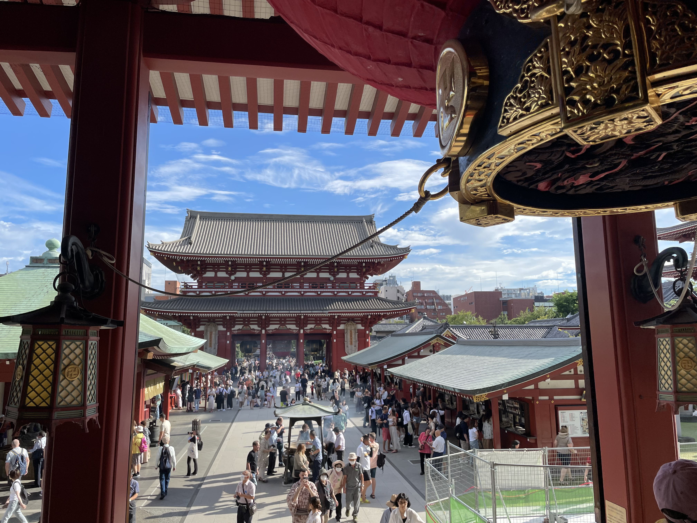
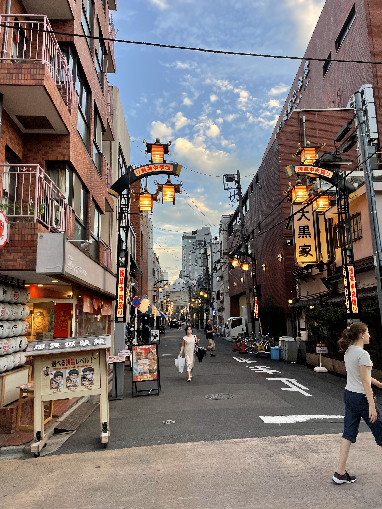
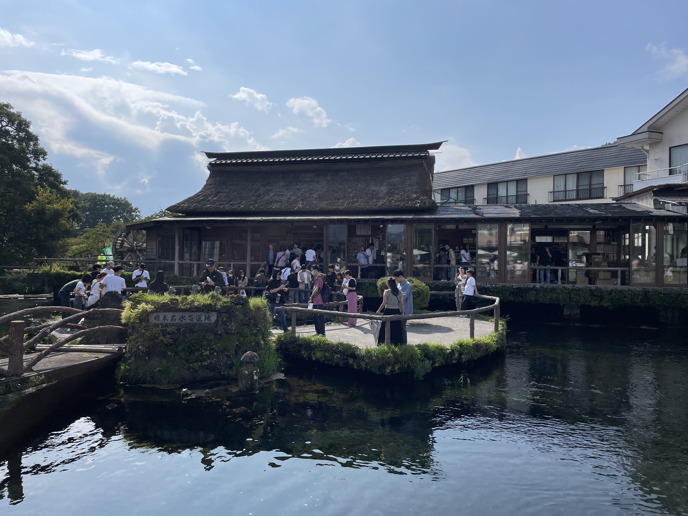
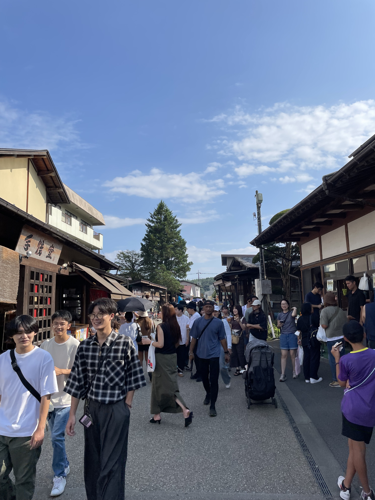
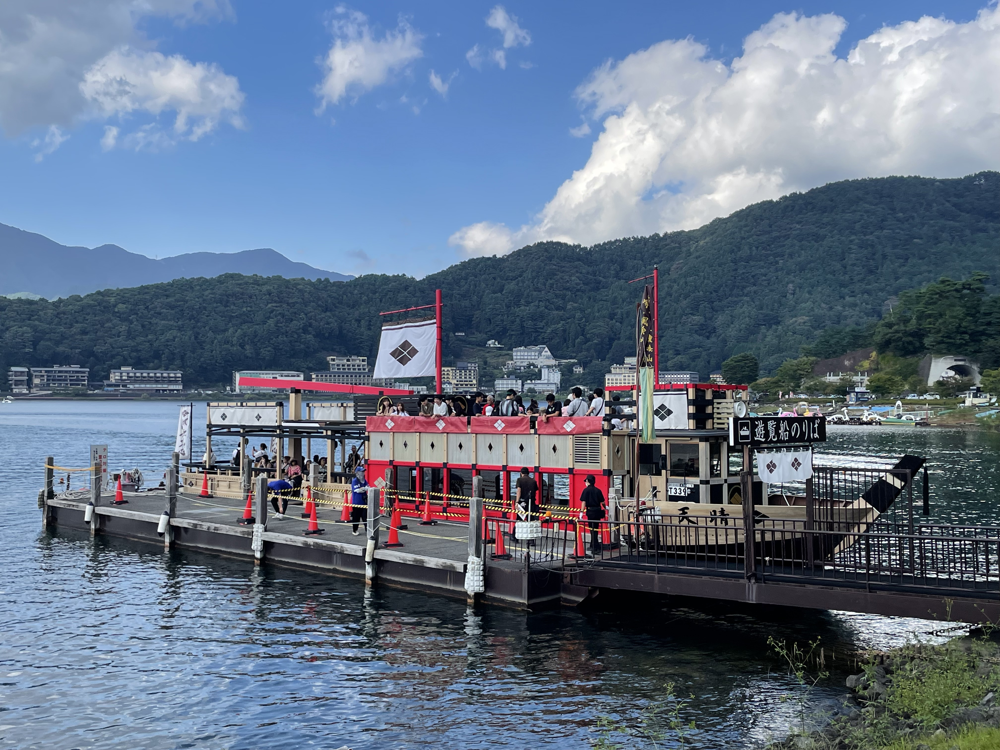
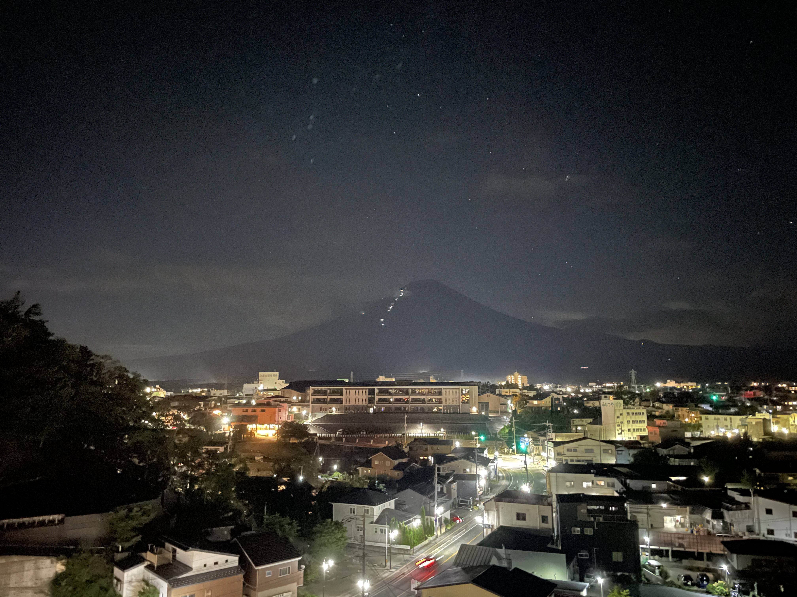
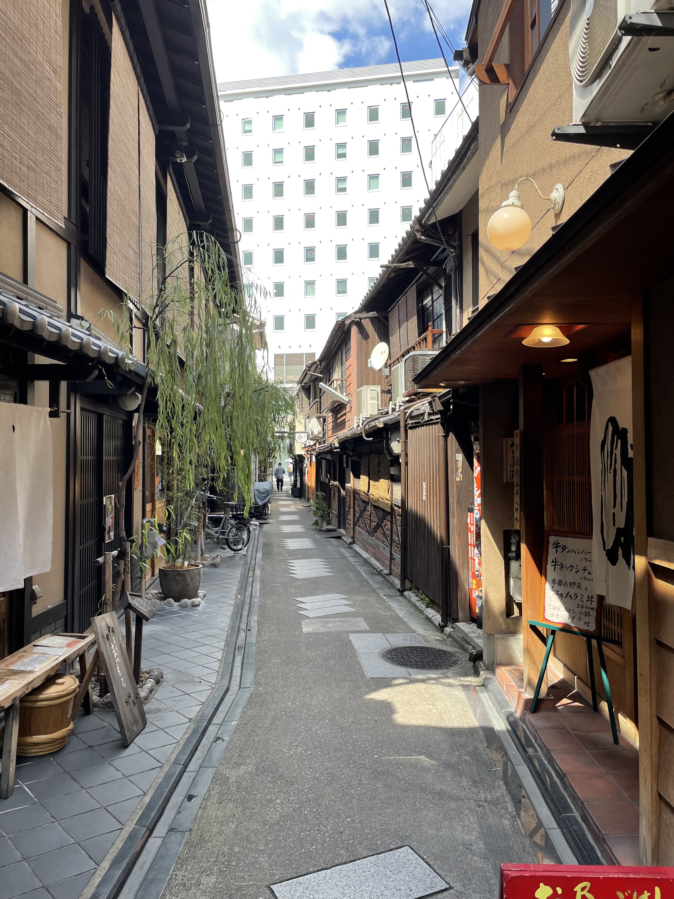
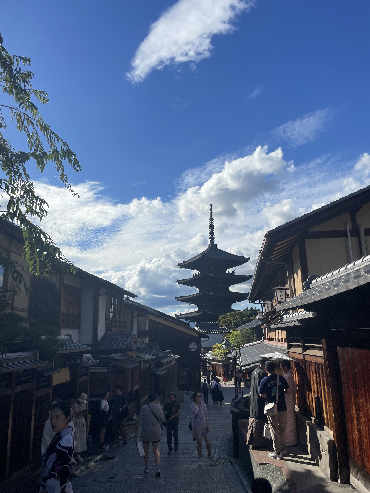

Some Travel Memories
Hover over an image to expand it! Click out or let go to zoom out.
Here are some of my favorite travel photos from various trips I've taken. Each image captures a moment that holds special meaning to me.








Food and Spots Recommendations
These files include personal food and travel spot recommendations gathered from my own trips.
Each spreadsheet highlights restaurants, cafes, scenic areas, and must-visit attractions.
- 📊 Honolulu.xlsx – My go-to spots in Oʻahu, including poke bowls and beach cafes.
- 📊 Japan.xlsx – A city-by-city breakdown of ramen shops, shrines, and day trips.
- 📄 Korea.pdf – A compact travel guide and food itinerary covering Seoul and Busan.
- 📊 LA.xlsx – Favorite eateries, dessert places, and cool photo spots in Los Angeles.
- 📊 New York.xlsx – A curated list of pizza, brunch, and hidden gems across NYC boroughs.
- 📊 Seattle–Vancouver.xlsx – Coffee shops, seafood joints, and scenic points in both cities.
- 📊 Seattle.xlsx – A dedicated Seattle list with Pike Place picks and nature getaways.